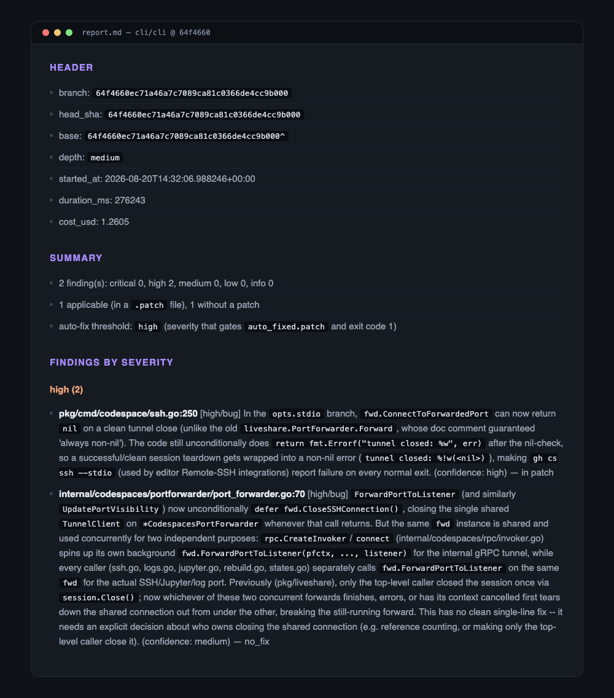
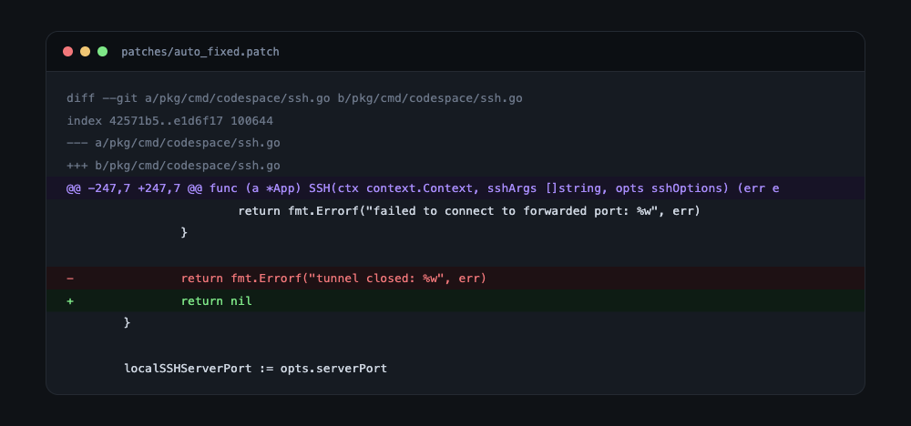

Ревью для веток, которые так и не стали пулл-реквестом.
Запускается по расписанию, которое выбираете вы, ревьюит каждую ветку, где вы что-то трогали, и оставляет отчёт с готовым патчем. Код уходит ровно туда же, куда ваша обычная сессия Claude Code, и никуда больше.
main.git apply --check. Применять или нет, решаете вы.Каждый найден на коммите, который его внёс. О том, что фикс существует, ревьюер не знал. Можно перейти и проверить.
cli/cli
// API отдаёт "gist, project, read:org, repo, workflow" strings.Split(scopes, ",") // у всех элементов, кроме первого, ведущий пробел
Точное сравнение с "workflow" не срабатывает никогда. Пользователю говорят, что у него нет права, которое у него есть. Фикс в апстриме →
cli/cli
gh pr checkout --worktree ../wt --recurse-submodules синхронизировал сабмодули в главном worktree, а в новом они оставались пустыми. Коммит, который он ревьюил →
pydantic
SecretStr('пароль') == SecretStr('пароль') кидал TypeError вместо истины: compare_digest не принимает не-ASCII. Фикс в апстриме →
Один .review-shift/config.yml, лежит в репозитории, так что у всей команды поведение одинаковое.
| Когда запускать | Любой час и минута. В 18:00, когда закрыли ноутбук, в 03:30, пока спите, или вообще никогда: зовите руками. |
|---|---|
| Какие ветки | Маски или регулярки, список исключений, что считать свежим, сколько штук за прогон. Либо trunk-режим: каждый коммит, легший в main. |
| Насколько глубоко | Два уровня, цена и время на ветку в таблице ниже. |
| Что можно патчить | Порог severity. Поставьте critical, и в автопатч попадут только серьёзные, остальное останется в отчёте. |
| Куда не заглядывать | Свои маски путей плюс четыре, которые нельзя убрать: .env*, secrets/**, *.pem, *.key. |
| Сколько можно потратить | Потолок на ветку и потолок на прогон. Упёрся в любой из них, остановился и сказал об этом. По умолчанию $10 и $50. |
pipx install review-shift
review-shift init
review-shift init launchd/plugin marketplace add
yushman/review-shift
/review-shiftreview-shift run \
--branch feature/x \
--depth mediumНепонятно, что будет ночью? review-shift run --dry-run проходит поиск веток, дифф, маскировку и отчёт при нуле вызовов модели, то есть бесплатно.

Настоящий прогон по cli/cli. Две находки, обе high. К первой есть фикс, вторая помечена no_fix и вынесена в отдельный раздел: находка, которую нельзя починить патчем, всё равно должна попасться вам на глаза.

Патч, собранный по первой находке. До записи на диск он прошёл git apply --check.
.review-shift/runs/2026-08-20T03-30-01Z-batch/ ├── report.md # находки, severity, что пропущено и почему ├── findings.json # структурно, проверено по схеме ├── patches/ │ ├── auto_fixed.patch # только выше вашего порога severity │ └── all.patch └── run.json # sha, стоимость, время, какая модель шла
| уровень | читает | на ветку |
|---|---|---|
low | изменённые файлы целиком | ~$0.52 · 95 с |
medium | плюс файлы, которые они импортируют | ~$0.77 · 217 с |
| Тронуть рабочее дерево | Ни checkout, ни commit, ни push, ни git apply помимо --check. Пока вы не применили, патч это просто файл. |
|---|---|
| Получить права на запись | Только чтение, по белому списку. --dangerously-skip-permissions тут ошибка конфигурации, а не опция. |
| Автоматом применить рискованное | Фикс с сетевым вызовом, подпроцессом, новой зависимостью или правкой CI в автопатч не попадёт. Такое смотрит человек. |
| Молча не сработать | Пропущенные ветки, непатчируемые находки и замаскированные куски доходят до отчёта с причиной. «Ничего не нашли» не выглядит как «ничего не ревьюили». |
Claude Code CLI 2.1.0 или новее, уже авторизованный, и Python 3.11+. Расписание работает через launchd, то есть на macOS; сам CLI идёт и на Linux, оттуда зовите его из cron или CI.
Ровно туда, куда его отправляет обычная сессия Claude Code: ревью делает она. Больше никуда. Нет ни сервиса, ни аккаунта, ни телеметрии. Секреты в диффе маскируются заранее, а четыре маски путей нельзя отключить.
Тратится ваш бюджет Claude Code, примерно $0.52–0.77 на ветку в зависимости от глубины. Проект сам не берёт ничего. Потолки включены по умолчанию: $10 на ветку, $50 на прогон. Упёрлось, остановилось, написало об этом.
Затем, что тут ревью случается до того, как PR появился. Ветку, на которой вы сидите третий день, прочитают сегодня ночью, пока менять код ещё дёшево. И локально, без выкладывания недоделанного куда бы то ни было.
Поставьте порог severity. Выше порога идёт в автопатч, ниже остаётся в отчёте, где это можно спокойно проигнорировать. По умолчанию порог high.
Все патчи из бенчмарка применились с первого раза: 18 из 18, 95% ДИ 82–100%. По находкам корпус пока шесть настоящих багов из апстрима: видно, что глубокий уровень находит примерно вдвое больше мелкого, но на заявление о значимости этого мало, и стенд сам помечает свою цифру recall как непубликуемую. Два бага из шести не нашёл ни один уровень.
pipx uninstall review-shift. В репозиторий он не писал, откатывать нечего.